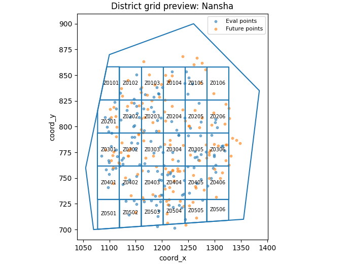

Note
Go to the end to download the full example code.
Create district grid layers from forecast points#
This example teaches you how to use GeoPrior’s
make-district-grid utility.
Unlike the plotting scripts, this command builds a reusable spatial layer. It turns forecast point locations into a regular grid of named zones, optionally clipped to a city boundary.
Why this matters#
Later workflows often need a simple district-like support layer for:
aggregating hotspot statistics,
assigning samples to zones,
tagging clusters with zone IDs,
and producing map-ready spatial summaries.
This builder creates exactly that layer from the forecast point cloud.
Imports#
We call the real production entrypoint from the project code. Then we read the generated grid back in and build one compact teaching preview.
from __future__ import annotations
import tempfile
from pathlib import Path
import geopandas as gpd
import matplotlib.pyplot as plt
import numpy as np
import pandas as pd
from shapely.geometry import Polygon
from geoprior._scripts.make_district_grid import (
make_district_grid_main,
)
from geoprior._scripts import utils as script_utils
Build compact synthetic point clouds#
The production script only needs:
sample_idx
coord_x
coord_y
in both eval and future CSVs.
For the lesson, we create two cities with slightly different spatial footprints and one future cloud that extends a bit beyond the eval cloud.
rng = np.random.default_rng(13)
def _city_points(
*,
city: str,
center_x: float,
center_y: float,
scale_x: float,
scale_y: float,
drift_x: float,
drift_y: float,
n: int = 140,
) -> tuple[pd.DataFrame, pd.DataFrame]:
ang = rng.uniform(0.0, 2.0 * np.pi, size=n)
rad = np.sqrt(rng.uniform(0.0, 1.0, size=n))
xe = center_x + scale_x * rad * np.cos(ang)
ye = center_y + scale_y * rad * np.sin(ang)
xf = (
center_x
+ drift_x
+ 1.08 * scale_x * rad * np.cos(ang)
+ rng.normal(0.0, 2.5, size=n)
)
yf = (
center_y
+ drift_y
+ 1.08 * scale_y * rad * np.sin(ang)
+ rng.normal(0.0, 2.0, size=n)
)
eval_df = pd.DataFrame(
{
"city": city,
"sample_idx": np.arange(n, dtype=int),
"coord_x": xe.astype(float),
"coord_y": ye.astype(float),
}
)
future_df = pd.DataFrame(
{
"city": city,
"sample_idx": np.arange(n, dtype=int),
"coord_x": xf.astype(float),
"coord_y": yf.astype(float),
}
)
return eval_df, future_df
ns_eval_df, ns_future_df = _city_points(
city="Nansha",
center_x=1200.0,
center_y=780.0,
scale_x=120.0,
scale_y=80.0,
drift_x=18.0,
drift_y=8.0,
)
zh_eval_df, zh_future_df = _city_points(
city="Zhongshan",
center_x=1720.0,
center_y=1080.0,
scale_x=160.0,
scale_y=95.0,
drift_x=26.0,
drift_y=12.0,
)
print("Nansha eval preview")
print(ns_eval_df.head(6).to_string(index=False))
print("")
print("Zhongshan future preview")
print(zh_future_df.head(6).to_string(index=False))
Nansha eval preview
city sample_idx coord_x coord_y
Nansha 0 1242.289259 747.939396
Nansha 1 1251.953707 735.522614
Nansha 2 1215.452009 754.462779
Nansha 3 1194.414093 831.689871
Nansha 4 1253.904732 798.940592
Nansha 5 1220.141990 775.304865
Zhongshan future preview
city sample_idx coord_x coord_y
Zhongshan 0 1840.456680 1031.251053
Zhongshan 1 1780.832112 1035.050148
Zhongshan 2 1669.289457 1168.798982
Zhongshan 3 1762.649825 1100.606096
Zhongshan 4 1652.311295 1043.788922
Zhongshan 5 1791.884393 1185.653432
Write the lesson inputs#
We follow the real command’s file-based workflow with explicit per-city eval/future CSVs.
tmp_dir = Path(
tempfile.mkdtemp(prefix="gp_sg_district_grid_")
)
ns_eval_csv = tmp_dir / "nansha_eval.csv"
ns_future_csv = tmp_dir / "nansha_future.csv"
zh_eval_csv = tmp_dir / "zhongshan_eval.csv"
zh_future_csv = tmp_dir / "zhongshan_future.csv"
ns_eval_df.to_csv(ns_eval_csv, index=False)
ns_future_df.to_csv(ns_future_csv, index=False)
zh_eval_df.to_csv(zh_eval_csv, index=False)
zh_future_df.to_csv(zh_future_csv, index=False)
print("")
print("Input files")
for p in [
ns_eval_csv,
ns_future_csv,
zh_eval_csv,
zh_future_csv,
]:
print(" -", p.name)
Input files
- nansha_eval.csv
- nansha_future.csv
- zhongshan_eval.csv
- zhongshan_future.csv
Build a simple boundary file for clipping#
The production script accepts an optional boundary GeoJSON/SHP. To make the lesson concrete, we provide one here so the page can show boundary clipping and sample assignment together.
A single dissolved geometry is enough because the script unions the boundary internally.
boundary_poly = Polygon(
[
(1070.0, 700.0),
(1355.0, 710.0),
(1385.0, 835.0),
(1260.0, 900.0),
(1100.0, 870.0),
(1055.0, 760.0),
]
)
boundary_gdf = gpd.GeoDataFrame(
{"name": ["lesson_boundary"]},
geometry=[boundary_poly],
crs=None,
)
boundary_geojson = tmp_dir / "lesson_boundary.geojson"
boundary_gdf.to_file(boundary_geojson, driver="GeoJSON")
print("")
print(f"Boundary file: {boundary_geojson.name}")
Boundary file: lesson_boundary.geojson
Run the real district-grid builder#
We ask the production command to:
use only Nansha for this compact example,
build a 6 x 5 grid,
clip it to the boundary,
write GeoJSON,
and also emit sample-to-zone assignments.
out_stem = "district_grid_gallery"
make_district_grid_main(
[
"--cities", "ns",
"--ns-eval",
str(ns_eval_csv),
"--ns-future",
str(ns_future_csv),
"--nx",
"6",
"--ny",
"5",
"--pad",
"0.03",
"--boundary",
str(boundary_geojson),
"--clip-boundary",
"--min-area-frac",
"0.03",
"--format",
"geojson",
"--assign-samples",
"--out",
str(tmp_dir / out_stem),
],
prog="make-district-grid",
)
[OK] wrote C:\Users\Daniel\AppData\Local\Temp\gp_sg_district_grid_6ufc1kg2\district_grid_gallery_nansha.geojson
[OK] wrote D:\projects\geoprior-v3\scripts\out\district_assignments_nansha.csv
Inspect the produced artifacts#
In grid mode the command writes:
one city-specific grid file,
and, when requested, one city-specific assignment CSV.
written = sorted(tmp_dir.glob("district_grid_gallery*"))
assignments = sorted(tmp_dir.glob("district_assignments_*.csv"))
print("")
print("Written files")
for p in written + assignments:
print(" -", p.name)
Written files
- district_grid_gallery_nansha.geojson
Read the generated outputs#
We read both the grid layer and the assignment table back in.
grid_geojson = tmp_dir / "district_grid_gallery_nansha.geojson"
assign_csv = script_utils.resolve_out_out(
"district_assignments_nansha.csv"
)
grid_gdf = gpd.read_file(grid_geojson)
assign_df = pd.read_csv(assign_csv)
print("")
print("Grid preview")
print(
grid_gdf[
[
"city",
"zone_id",
"zone_label",
"row",
"col",
"xmin",
"xmax",
"ymin",
"ymax",
]
].head(10).to_string(index=False)
)
print("")
print("Assignments preview")
print(assign_df.head(10).to_string(index=False))
Grid preview
city zone_id zone_label row col xmin xmax ymin ymax
Nansha Z0501 Zone Z0501 4 0 1077.693780 1119.203482 697.062452 729.283281
Nansha Z0502 Zone Z0502 4 1 1119.203482 1160.713185 697.062452 729.283281
Nansha Z0503 Zone Z0503 4 2 1160.713185 1202.222887 697.062452 729.283281
Nansha Z0504 Zone Z0504 4 3 1202.222887 1243.732589 697.062452 729.283281
Nansha Z0505 Zone Z0505 4 4 1243.732589 1285.242292 697.062452 729.283281
Nansha Z0506 Zone Z0506 4 5 1285.242292 1326.751994 697.062452 729.283281
Nansha Z0401 Zone Z0401 3 0 1077.693780 1119.203482 729.283281 761.504109
Nansha Z0402 Zone Z0402 3 1 1119.203482 1160.713185 729.283281 761.504109
Nansha Z0403 Zone Z0403 3 2 1160.713185 1202.222887 729.283281 761.504109
Nansha Z0404 Zone Z0404 3 3 1202.222887 1243.732589 729.283281 761.504109
Assignments preview
city sample_idx coord_x coord_y zone_id zone_row zone_col zone_present
Nansha 0 1242.289259 747.939396 Z0404 3 3 True
Nansha 1 1251.953707 735.522614 Z0405 3 4 True
Nansha 2 1215.452009 754.462779 Z0404 3 3 True
Nansha 3 1194.414093 831.689871 Z0103 0 2 True
Nansha 4 1253.904732 798.940592 Z0205 1 4 True
Nansha 5 1220.141990 775.304865 Z0304 2 3 True
Nansha 6 1151.102405 751.697579 Z0402 3 1 True
Nansha 7 1315.607607 781.274074 Z0306 2 5 True
Nansha 8 1273.930850 748.897963 Z0405 3 4 True
Nansha 9 1262.511173 776.008711 Z0305 2 4 True
Build one compact visual preview#
This preview is not part of the production builder itself. It is a teaching aid for the gallery page.
It overlays:
eval and future points,
the boundary,
the clipped district grid.
fig, ax = plt.subplots(
figsize=(6.8, 5.2),
constrained_layout=True,
)
ax.scatter(
ns_eval_df["coord_x"].to_numpy(float),
ns_eval_df["coord_y"].to_numpy(float),
s=10,
alpha=0.55,
label="Eval points",
)
ax.scatter(
ns_future_df["coord_x"].to_numpy(float),
ns_future_df["coord_y"].to_numpy(float),
s=10,
alpha=0.55,
label="Future points",
)
boundary_gdf.boundary.plot(ax=ax)
grid_gdf.boundary.plot(ax=ax)
for _, row in grid_gdf.iterrows():
rp = row.geometry.representative_point()
ax.text(
rp.x,
rp.y,
str(row["zone_id"]),
ha="center",
va="center",
fontsize=7,
)
ax.set_title("District grid preview: Nansha")
ax.set_xlabel("coord_x")
ax.set_ylabel("coord_y")
ax.legend(fontsize=8)

<matplotlib.legend.Legend object at 0x000002952F11F7F0>
Learn how to read the grid artifact#
Each grid row represents one zone polygon with:
zone_id: a compact ID such asZ0305,row: north-to-south row index starting at 0,col: west-to-east column index starting at 0,bounding coordinates,
and geometry.
The geometry is the full cell unless boundary clipping is enabled.
Learn how the zone IDs are formed#
The script numbers rows from the north (top) downward and columns from the west (left) eastward.
So:
Z0101is the north-west corner,Z0201is one row farther south,Z0102is one column farther east.
This is useful because the IDs remain stable and readable even after clipping.
Why clipping matters#
Without a boundary, the builder creates a full rectangular grid over the padded point extent.
With --clip-boundary, each cell is intersected with the
boundary polygon, and tiny slivers can be dropped using
--min-area-frac.
That makes the final grid much more suitable for map overlays or zone-based reporting.
Why the assignment CSV is useful#
With --assign-samples, the script also writes a compact table
mapping each sample point to:
zone_idzone_rowzone_col
and, when clipping was used, a zone_present flag telling you
whether that assigned zone survived clipping.
This is especially handy for later scripts that tag clusters or aggregate point-level outputs by zone.
Why this page belongs after make_boundary.py#
The natural workflow is:
build a boundary,
build a district grid over the city footprint,
optionally assign samples to grid zones,
reuse the zones in exposure or cluster-tagging steps.
So this page is best seen as the next support-layer lesson after the boundary page.
Command-line version#
The same lesson can be reproduced from the CLI.
Legacy dispatcher:
python -m scripts make-district-grid \
--ns-eval results/nansha_eval.csv \
--ns-future results/nansha_future.csv \
--nx 12 \
--ny 12 \
--boundary boundary_nansha.geojson \
--clip-boundary \
--assign-samples \
--format both \
--out district_grid
Modern CLI:
geoprior build district-grid \
--ns-eval results/nansha_eval.csv \
--ns-future results/nansha_future.csv \
--nx 12 \
--ny 12 \
--boundary boundary_nansha.geojson \
--clip-boundary \
--assign-samples \
--format both \
--out district_grid
Source-folder discovery:
geoprior build district-grid \
--ns-src results/nansha_run \
--zh-src results/zhongshan_run \
--split auto \
--nx 12 \
--ny 12 \
--pad 0.02 \
--format geojson \
--out district_grid
The gallery page teaches the builder. The command line reproduces it in a workflow.
Total running time of the script: (0 minutes 1.830 seconds)